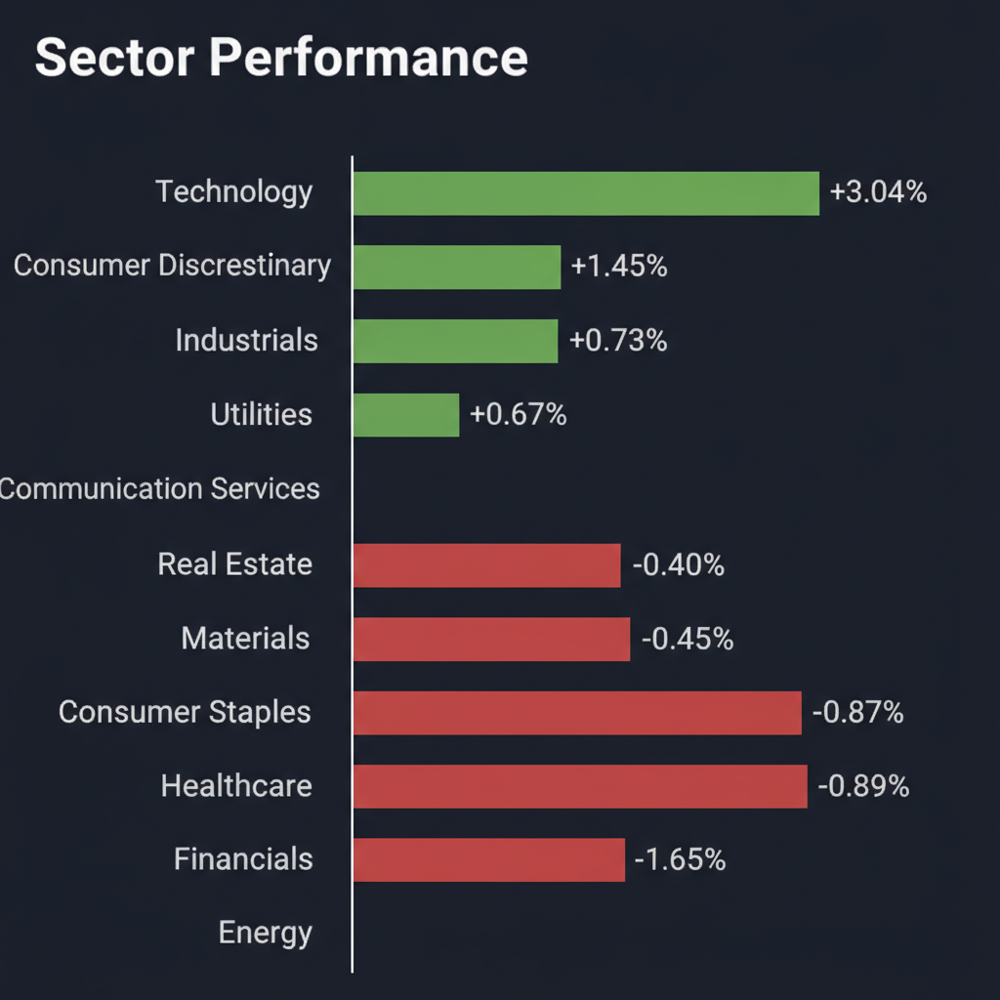
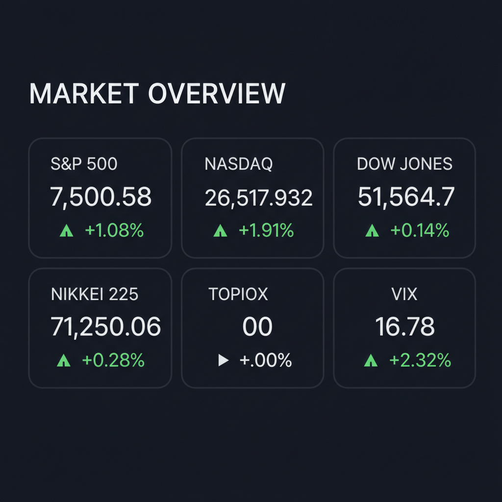

Daily Investment Report - 2026-06-22
Generated: 2026/6/22 7:33:39


投資チームミーティングの結論に基づき、最終投資レポートを以下の通り作成いたしました。
1. エグゼクティブサマリー
- AI相場の熱狂により主要指数は最高値を更新していますが、実需と期待値の乖離や地政学リスクにより足元の不安定感が増しています。
- 過熱した銘柄の利益確定を急ぎ、地政学リスクや物流・インフレ動向を注視する「守り」のフェーズへ移行すべき局面です。
- 全体として強気トレンドは継続していますが、ボラティリティ急拡大への備えを優先してください。
2. 注目銘柄リスト
強気（買い推奨）
* 現在、全会一致で「買い」を推奨できる中小型株は見当たりません。市場全体の過熱感を考慮し、ボトムアップで選別を継続します。
中立（様子見）
* 現時点では、Web調査および合議にて「中立」と評価される銘柄はありません。
弱気（警戒）
*
エネルギーセクターETF (XLE) [平均スコア 3.2/10]: 地政学リスクの後退による原油価格の下落圧力と、供給過多懸念が強く、現在は投資タイミングではありません。
*
SoundHound AI (SOUN) [平均スコア 2.0/10]: 高いバリュエーション、継続的な巨額赤字、およびインサイダーによる株式売却の動きがリスクとなっており、投資は避けるべきです。
3. セクター推奨ランキング
1.
半導体製造装置・メモリ: AIインフラの物理的ボトルネックであり、ハイパースケーラーの投資が継続する限り、最も確実性の高い収益源です。
2.
サイバーセキュリティ (中小型株): AIインフラの拡大に伴う脆弱性を補うストック型ビジネスであり、インフレ耐性と安定した収益性が期待されます。
3.
ヘルスケア (XLV): 市場の調整局面において下げ幅を限定するディフェンシブな役割を果たし、リスクオフ時のショックアブソーバーとなります。
4. 今週の注目イベント
*
来週: FedEx 決算発表（物流およびサプライチェーンの先行指標として重要）
*
来週: FRBが重視する主要インフレ指標の発表（今後の金融政策の方向性を占う重要イベント）
5. リスク要因
*
地政学リスク: ホルムズ海峡封鎖の可能性による原油価格急騰と、それに伴うコストプッシュ型インフレの再燃。
*
期待先行の剥落: AI銘柄に対する「完璧な業績」への期待が極限に達しており、わずかな業績見通しの下方修正が激しい株価下落を招くリスク。
*
政策リスク: 米国における最低賃金引き上げへの抵抗による企業収益圧迫、および日本における日銀の政策転換（利上げ）による円安の反転リスク。
6. アクションアイテム
* ポートフォリオの現金比率を20%〜30%まで引き上げ、市場急変時の押し目買い余力を確保する。
* 直近の決算で期待を下回った銘柄や、PERが不当に高い銘柄を機械的に利益確定する。
* ボラティリティが低いうちに、インデックスのプットオプション購入によるテイルリスクヘッジの検討を開始する。
7. 米国株インデックス戦略（インデックス投資家向けアドバイス）
*
現在の市場環境の評価: 歴史的高値圏かつ買われすぎ（RSI70超）であるため、長期保持は維持しつつも、一部利益確定による現金化を強く推奨します。
*
今後1〜3ヶ月の見通し: AIブームが下支えするものの、インフレ指標の発表や地政学リスクの顕在化により、一時的な調整局面（ボラティリティの拡大）に入る可能性が高いです。
*
積立投資への影響: 定期積立は継続すべきですが、高値での一括投資は控え、相場が10%程度の調整を見せた際に買い増す余力を残してください。
*
注意すべきイベント: FRBのインフレ指標発表および主要企業の決算シーズンは、インデックス全体のトレンドを反転させるトリガーとなります。
*
リスクシナリオ: 地政学ショックとインフレ再燃が重なる場合、大幅な下落が予測されます。その際は、パニック売りをせず、積立による取得単価の平準化を淡々と継続することが最善の防衛策です。
免責事項：本レポートは情報提供を目的としており、特定の銘柄の売買を推奨するものではありません。投資判断は自己責任でお願いいたします。
Agent Scoring Matrix（Web調査後の合議評価）
各エージェントがWeb調査結果を踏まえて独立に10段階評価した結果です。平均7以上=強気、4〜6.9=中立、4未満=弱気。
| 銘柄 |
ファンダメンタルズアナリスト | テンバガーハンター | マクロエコノミスト | テクニカルストラテジスト | リスクマネージャー |
平均 |
判定 |
| XLE |
4
地政学リスク後退でエネルギー価格下落圧力 | 3
地政学リスク緩和でエネルギー価格調整懸念 | 3
地政学リスク低下、エネルギー価格下落懸念 | 3
地政学リスク後退、エネルギー価格下落懸念 | 3
供給増懸念・地政学リスク後退 |
3.2 |
弱気 |
| SOUN |
2
累積赤字、低収益性、インサイダー売りで警戒 | 2
赤字拡大、バリュエーション過大、インサイダー売り | 2
累積赤字大、インサイダー売却、バリュエーション高 | 2
赤字継続、インサイダー売り、割高感強い | 2
赤字拡大・インサイダー売り・高PER |
2 |
弱気 |
Web Research Results (Google Search Grounding)
エージェントが推奨した中小型株について、Google検索で最新情報を調査した結果です。
SOUN
SoundHound AI（SOUN）に関する最新情報は以下の通りです。
1. 企業概要
SoundHound AIは、音声認識および会話型AIプラットフォームを提供する米国カリフォルニア州サンタクララに拠点を置くテクノロジー企業です。人間のような対話を可能にする対話型音声AIを開発し、企業が顧客に高品質な会話体験を提供できるよう支援しています。同社の「Houndify」プラットフォームは、自動車、レストラン、IoTデバイス、エンタープライズ向け顧客サービスなど、幅広い業界で利用されています。独自のPolaris基盤モデルにより、高い認識精度と応答速度を実現しており、関連特許も250件以上保有しています。現在の時価総額は約30.7億ドルから30.9億ドルです。
2. 直近の業績・決算情報
2026年第1四半期（3月31日終了）の売上高は4,420万ドルで、前年同期比52%増と過去最高を記録しました。買収の影響を除いた中核事業である自動車およびIoT AIセグメントの有機的成長率は約88%でした。一方、GAAPベースの純損失は2,500万ドル、1株当たり損失（EPS）は0.06ドルでした。粗利益率はGAAPベースで31.1%に低下しています。同社は2026年通期の売上高ガイダンスを2億2,500万ドルから2億6,000万ドルに据え置いています。
3. 最新ニュース・材料（直近1-2週間）
* 2026年5月、LivePersonの買収を発表しました。これは下半期に完了予定で、両社を合わせて約5億ドルの収益機会を見込んでいます。これにより、エンドツーエンドの会話型AIプラットフォーム構築を目指します。
* 自己学習型エージェントAIプラットフォーム「OASYS」を発表しました。
* 通信および自動車保険分野でのパートナーシップ拡大や、レストランのAI注文システム導入の継続的な進展が報じられています。
* 共同創設者によるインサイダー取引（株式売却）のニュースがありました。
4. アナリスト評価・目標株価
複数のアナリストがSoundHound AIを「Strong Buy」（強気買い）または「Buy」（買い）と評価しています。平均目標株価は12.75ドルから14.00ドルの範囲で、現在の株価から79%から96%の上昇余地を示唆しています。最高目標株価は20.00ドル、最低目標株価は7.00ドルから8.00ドルです。
5. リスク要因
* 高いバリュエーションと競争: AI市場は急速に進化しており、同社は2027年予想売上高の約15倍、2026年予想売上高の約30倍という高い評価を受けています。競争が激化する音声AI市場での実行リスクや競合他社（大手テック企業を含む）との競争が懸念されます。
* 財務上の懸念: SoundHound AIは設立以来、継続的に損失を計上しており、2026年3月31日時点での累積赤字は9億8,210万ドルに達しています。今後も大幅な損失が続くと予想されており、持続的な収益性とキャッシュフローの創出が課題です。
* 顧客依存とM&Aリスク: 収益の一部が特定の主要顧客に依存している点がリスクとして挙げられます。また、LivePersonの買収に伴う統合リスクや、技術開発およびマーケティングへの多額の投資が必要となることによる財務負担の増加も懸念されます。
* 希薄化リスク: 成長資金を調達するための株式発行による希薄化の可能性も指摘されています。
6. 株価の最近の動き
2026年6月18日時点の株価は7.10ドルから7.12ドルの範囲で推移しています。過去52週間の株価は5.83ドルから22.17ドルの間で変動しています。年初来では約35%下落しており、過去1年間では25%から41%の下落を記録しています。直近では、Q1 2026決算発表後に、売上高成長は堅調だったものの、収益性やキャッシュフローに関する懸念から株価が下落しました。インサイダーによる株式売却のニュースも株価に影響を与えています。
XLE
XLE (State Street Energy Select Sector SPDR Fund)に関する最新情報は以下の通りです。
1. 企業概要（事業内容、時価総額、業界でのポジション）
XLEは、S&P 500指数におけるエネルギーセクターの銘柄で構成される「エネルギー・セレクト・セクター指数」の価格と利回りのパフォーマンスに概ね連動する投資成果を目指すETF（上場投資信託）です。主に、石油、ガス、消耗燃料、エネルギー設備・サービスといった業種に属する米国の大手エネルギー企業に投資を行います。
時価総額は、2026年6月時点で約362億ドルから372.9億ドル（情報源により差異あり）です。 米国のエネルギー株市場全体のパフォーマンスを測る代表的な指標として広く認識されています。 組み入れ銘柄の上位はエクソンモービル (XOM) とシェブロン (CVX) で、この2社だけでファンド全体の約40%以上を占める集中度の高い構成となっています。
2. 直近の業績・決算情報（売上、利益、成長率）
XLEはETFであるため、一般的な企業のような売上や利益といった決算情報はありません。ETFとしての運用状況が重要となります。
*
運用資産総額 (AUM)：約371.3億ドル（2026年6月時点）
*
経費率: 0.08%と低い水準です。
*
配当: 四半期ごとに配当を実施しており、直近では2026年6月18日に1株あたり0.3849ドルの配当が発表され、2026年6月24日に支払われる予定です。 配当利回りは約2.77%から3.52%（情報源により差異あり）です。 なお、過去5年間の配当成長率は-6.6%となっています。
*
パフォーマンス:
* 年初来 (YTD) リターン: 21.05% (2026年6月21日時点)
* 過去12ヶ月リターン: 24.74% (2026年6月21日時点)
* 過去10年間年率リターン: 9.04% (2026年6月21日時点)
3. 最新ニュース・材料（直近1-2週間の重要なニュース）
* 2026年6月18日、米国とイラン間の新合意によりイラン原油輸出の再開が間近に迫っているとのニュースが報じられました。しかし、回復には課題も残るとされています。
* この報道を受けて、2026年6月16日にはエネルギー株全体が下落し、XLEも0.7%下落しました。中東紛争終結の枠組み合意により世界的な供給懸念が緩和されたことが背景にあります。米国とイランは和平協定に署名し、イランは制裁解除を求める中で核開発計画に関する新たな協議ラウンドを開始する見通しです。
* ウォール・ストリート・ジャーナル紙は、米国が合意に基づきイランによる石油・燃料の即時販売を許可すると報じています。
* エクイノールは、2026年の自社株買い戻し額を30億ドルに倍増させると発表し、2027年以降も年間20億ドルから40億ドルの自社株買い戻しを予想しています。
* フィナンシャル・タイムズ紙の報道によると、コノコフィリップスがシリア新政権と開発協定を締結する米国の主要石油・ガス会社第1号となる可能性があります。
* 2026年に入り、XLEは21.6%上昇し、市場全体を大幅にアウトパフォームしています。この上昇は、エクソンモービルやシェブロンといった石油大手のキャッシュフロー創出能力に対する投資家の信頼に牽引されています。
4. アナリスト評価・目標株価（あれば）
XLEのようなETFには、個別株のような目標株価が設定されることは稀です。アナリストは主にエネルギーセクター全体の展望やXLEの構成銘柄の動向を評価します。
* 一部の情報源では、今後12ヶ月のXLEの株価予測がポジティブであり、アナリストの平均目標株価が83.63ドルで、現在の価格から約45.32%の上昇を示唆しているとされています。 しかし、他の情報源ではXLEに対する特定のWall St.アナリスト評価はないと記載されています。
5. リスク要因（競合、規制、財務上の懸念）
*
原油価格の変動: XLEのパフォーマンスは、原油および天然ガスの国際価格に大きく影響されます。エネルギー企業の利益は資源価格に直結するため、原油価格の変動は主要なリスク要因です。
*
地政学的リスク: 中東情勢などの地政学的な緊張緩和は、石油の「戦争プレミアム」を消滅させ、原油価格に下落圧力をかける可能性があります。イランからの供給再開などの動きも市場に影響を与えます。
*
エネルギー転換と規制: 世界的な脱炭素化の流れや環境規制の強化は、エネルギーセクターに長期的な構造変化をもたらす可能性があります。
*
金利動向: エネルギーセクターは設備投資に多額の資金を必要とするため、金利上昇は企業の借入コストを増加させ、利益を圧迫する可能性があります。
*
集中投資: XLEはエクソンモービルとシェブロンの2社への投資比率が高いため、これら主要企業の業績や方針がファンド全体のパフォーマンスに大きく影響する可能性があります。
6. 株価の最近の動き（直近のトレンド）
XLEの株価は、2026年6月20日の終値で53.77ドルまたは53.85ドルでした。 日中の変動範囲は53.25ドルから54.58ドルでした。 過去52週間の株価は42.05ドルから63.46ドルの範囲で推移しています。
最近のトレンドとしては、2026年に入り21.6%上昇し、市場全体をアウトパフォームする力強い動きを見せています。 しかし、2026年6月16日には中東情勢の進展により原油価格が下落し、XLEも0.7%の下落を記録しました。 テクニカル指標の一部では、日次の買い/売りのシグナルが「強い売り」を示しているとの見方もあります。